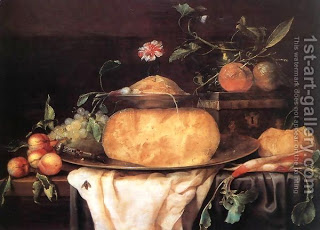

Chullin 105 - Waiting Between Meals
There is a Jewish custom to wait some length of time, up to six hours, after eating a meat dish and before a dairy dish. This is a precaution: the taste of meat lingers in one's mouth, and meat pieces get stuck between the teeth, as in " The meat was still between their teeth ."
Agra said, "Fowl and cheese may be eaten one after the other in a carefree manner, without washing one's hands and without cleaning the mouth with food and drink." Rav Yitzchak visited Rav Ashi's home. They brought him cheese, and he ate it; they then brought domestic animal meat, and he ate it without washing his hands. They questioned his behavior, "Agra taught that fowl and cheese may be eaten in a carefree manner, but not any meat!?" He answered, "This applies only at night, but by day, when I can see that my hands are clean from cheese, no washing is required."
Mar Ukva said, "Regarding this matter I am like vinegar the son of wine compared to my father. For my father waited for twenty-four hours after meat before eating cheese, and I eat cheese at the next meal."
Art: Joris Van Son - Still-Life with Cheese